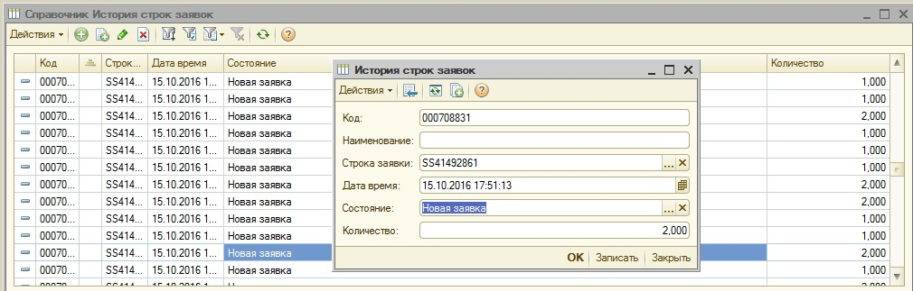
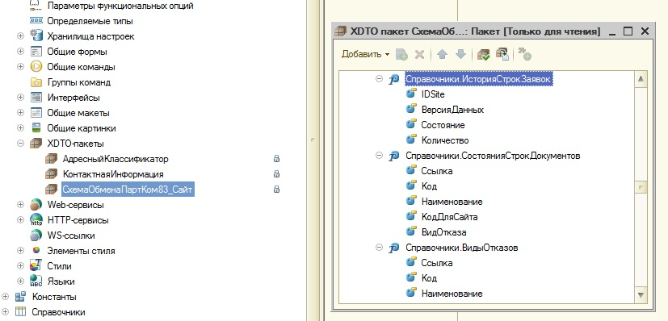
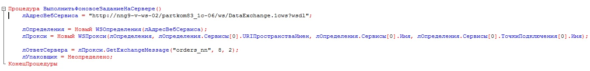

<!DOCTYPE html PUBLIC "-//W3C//DTD HTML 4.0 Transitional//EN"><html xmlns:o="urn:schemas-microsoft-com:office:office"><head><meta content="text/html; charset=utf-8" http-equiv="Content-Type"></meta><link rel="stylesheet" type="text/css" href="v8help://service_book/service_style"></link><meta name="GENERATOR" content="MSHTML 11.00.9600.18921"></meta></head><body><font size="3"><font face="Calibri"> </font> </font>
<blockquote style="MARGIN-RIGHT: 0px" dir="ltr">
<p class="MsoNormal" style="TEXT-ALIGN: justify; MARGIN: 0cm 0cm 8pt"><b style="mso-bidi-font-weight: normal"><span style="COLOR: #2e74b5; mso-themecolor: accent1; mso-themeshade: 191; mso-fareast-language: RU; mso-no-proof: yes"><font size="3">Инструкция по выгрузке истории заявок из 1с83 на сайт.<o:p></o:p></font></span></b></p>
<p class="MsoListParagraphCxSpFirst" style="TEXT-ALIGN: justify; MARGIN: 0cm 0cm 0pt 18pt; TEXT-INDENT: -18pt; mso-add-space: auto; mso-list: l0 level1 lfo1"><font size="3"><b style="mso-bidi-font-weight: normal"><span style="mso-bidi-font-family: Calibri; mso-bidi-theme-font: minor-latin"><span style="mso-list: Ignore">1.<span style="FONT: 7pt &quot;Times New Roman&quot;">       </span></span></span></b><b style="mso-bidi-font-weight: normal"><span style="mso-fareast-language: RU; mso-no-proof: yes">Основные тезисы:</span><o:p></o:p></b></font></p>
<p class="MsoListParagraphCxSpMiddle" style="TEXT-ALIGN: justify; MARGIN: 0cm 0cm 0pt 18pt; mso-add-space: auto"><span style="mso-fareast-language: RU; mso-no-proof: yes"><font size="3">- инициация процедуры обмена выполняется на стороне сайта<o:p></o:p></font></span></p>
<p class="MsoListParagraphCxSpMiddle" style="TEXT-ALIGN: justify; MARGIN: 0cm 0cm 0pt 18pt; mso-add-space: auto"><font size="3"><span style="mso-fareast-language: RU; mso-no-proof: yes">- обмен выполняется с помощью </span><span lang="EN-US" style="mso-fareast-language: RU; mso-no-proof: yes; mso-ansi-language: EN-US">web</span><span style="mso-fareast-language: RU; mso-no-proof: yes">-сервиса 1с83 <i style="mso-bidi-font-style: normal">GetExchangeMessage</i><o:p></o:p></span></font></p>
<p class="MsoListParagraphCxSpMiddle" style="TEXT-ALIGN: justify; MARGIN: 0cm 0cm 0pt 18pt; mso-add-space: auto"><font size="3"><span style="mso-fareast-language: RU; mso-no-proof: yes">- параметр <i style="mso-bidi-font-style: normal">ExchangePlan</i> при обращении к </span><span lang="EN-US" style="mso-fareast-language: RU; mso-no-proof: yes; mso-ansi-language: EN-US">web</span><span style="mso-fareast-language: RU; mso-no-proof: yes">-сервису должно быть равен "<i style="mso-bidi-font-style: normal">orders_nn</i>"<o:p></o:p></span></font></p>
<p class="MsoListParagraphCxSpMiddle" style="TEXT-ALIGN: justify; MARGIN: 0cm 0cm 0pt 18pt; mso-add-space: auto"><span style="mso-fareast-language: RU; mso-no-proof: yes"><font size="3">- регламент обмена (частота обращений к сервису) на данный момент не настроен. <o:p></o:p></font></span></p>
<p class="MsoListParagraphCxSpMiddle" style="TEXT-ALIGN: justify; MARGIN: 0cm 0cm 0pt 18pt; mso-add-space: auto"><font size="3"><span style="mso-fareast-language: RU; mso-no-proof: yes">-</span><span lang="EN-US" style="mso-fareast-language: RU; mso-no-proof: yes; mso-ansi-language: EN-US">c</span><span style="mso-fareast-language: RU; mso-no-proof: yes">корость расчета в среднем составляет ? (на реальных данных теста ещё не проводилось) сек<o:p></o:p></span></font></p>
<p class="MsoListParagraphCxSpMiddle" style="TEXT-ALIGN: justify; MARGIN: 0cm 0cm 0pt 18pt; mso-add-space: auto"><span style="mso-fareast-language: RU; mso-no-proof: yes"><font size="3">- для автонумерации сообщений в 1с83 создан план обмена ‘Обмен с сайтом: история заявок’, где<o:p></o:p></font></span></p>
<p class="MsoListParagraphCxSpMiddle" style="TEXT-ALIGN: justify; MARGIN: 0cm 0cm 0pt 18pt; mso-add-space: auto"><font size="3"><span style="mso-fareast-language: RU; mso-no-proof: yes"><span style="mso-spacerun: yes"> </span><span style="mso-tab-count: 1">       </span>узел с </span><span lang="EN-US" style="mso-fareast-language: RU; mso-no-proof: yes; mso-ansi-language: EN-US">id</span><span style="mso-fareast-language: RU; mso-no-proof: yes"> = 7 – это получатель (база 1с83), <o:p></o:p></span></font></p>
<p class="MsoListParagraphCxSpMiddle" style="TEXT-ALIGN: justify; MARGIN: 0cm 0cm 0pt 18pt; TEXT-INDENT: 17.4pt; mso-add-space: auto"><font size="3"><span style="mso-fareast-language: RU; mso-no-proof: yes">  узел с </span><span lang="EN-US" style="mso-fareast-language: RU; mso-no-proof: yes; mso-ansi-language: EN-US">id</span><span style="mso-fareast-language: RU; mso-no-proof: yes"> = 8 – это отправитель (Сайт), у которого должен быть выставлен признак ‘исходящий’<o:p></o:p></span></font></p>
<p class="MsoListParagraphCxSpMiddle" style="TEXT-ALIGN: justify; MARGIN: 0cm 0cm 0pt 18pt; TEXT-INDENT: 17.4pt; mso-add-space: auto"><font size="3"><span style="mso-fareast-language: RU; mso-no-proof: yes">  параметр Sender при обращении к </span><span lang="EN-US" style="mso-fareast-language: RU; mso-no-proof: yes; mso-ansi-language: EN-US">web</span><span style="mso-fareast-language: RU; mso-no-proof: yes">-сервису по "<i style="mso-bidi-font-style: normal"> orders_nn</i> " должен быть равен 7.<o:p></o:p></span></font></p>
<p class="MsoListParagraphCxSpMiddle" style="TEXT-ALIGN: justify; MARGIN: 0cm 0cm 0pt 18pt; mso-add-space: auto"><span style="mso-fareast-language: RU; mso-no-proof: yes"><font size="3">- на сайт выгружаются только изменения, т.е. только та история, которые ещё не была выгружена на сайт ранее<o:p></o:p></font></span></p>
<p class="MsoListParagraphCxSpMiddle" style="TEXT-ALIGN: justify; MARGIN: 0cm 0cm 0pt 18pt; mso-add-space: auto"><span style="mso-fareast-language: RU; mso-no-proof: yes"><font size="3">- данные для передачи на сайт берутся как список зарегистрированных из<o:p></o:p></font></span></p>
<p class="MsoListParagraphCxSpMiddle" style="TEXT-ALIGN: justify; MARGIN: 0cm 0cm 0pt 18pt; mso-add-space: auto"><i style="mso-bidi-font-style: normal"><span style="mso-fareast-language: RU; mso-no-proof: yes"><font size="3"><span style="mso-spacerun: yes"> </span><span style="mso-tab-count: 1">       </span></font><a href="Catalog.ИсторияСтрокЗаявок/Help"><font color="#0066cc"><font size="3">Справочник.ИсторияСтрокЗаявок<o:p></o:p></font></font></a></span></i></p>
<p class="MsoListParagraphCxSpMiddle" style="TEXT-ALIGN: justify; MARGIN: 0cm 0cm 0pt 1cm; mso-add-space: auto"><span style="mso-fareast-language: RU; mso-no-proof: yes"><font size="3">Справочник предназначен для хранения связки СтрокаЗаявки / Состояние / Количество и заполняется в результате выполнения фонового задания.</font></span></p>
<p class="MsoListParagraphCxSpMiddle" style="TEXT-ALIGN: justify; MARGIN: 0cm 0cm 0pt 1cm; mso-add-space: auto"><span style="mso-fareast-language: RU; mso-no-proof: yes"><font size="3"></font></span> </p>
<p class="MsoListParagraphCxSpMiddle" style="TEXT-ALIGN: justify; MARGIN: 0cm 0cm 0pt 1cm; mso-add-space: auto"><span style="mso-fareast-language: RU; mso-no-proof: yes"><font size="3"></img></font></span></p>
<p class="MsoListParagraphCxSpMiddle" style="TEXT-ALIGN: justify; MARGIN: 0cm 0cm 0pt 1cm; mso-add-space: auto"><span style="mso-fareast-language: RU; mso-no-proof: yes"><i style="mso-bidi-font-style: normal"><o:p></o:p></i></span><font size="3"> </font></p>
<p class="MsoListParagraphCxSpMiddle" style="TEXT-ALIGN: justify; MARGIN: 0cm 0cm 0pt 18pt; mso-add-space: auto"><span style="mso-fareast-language: RU; mso-no-proof: yes"><font size="3">- история по выгруженным на сайт данным хранится в <o:p></o:p></font></span></p>
<p class="MsoListParagraphCxSpMiddle" style="TEXT-ALIGN: justify; MARGIN: 0cm 0cm 0pt 18pt; mso-add-space: auto"><span style="mso-fareast-language: RU; mso-no-proof: yes"><font size="3"><span style="mso-spacerun: yes">  </span><span style="mso-tab-count: 1">      </span><i style="mso-bidi-font-style: normal"><a href="InformationRegister.ИсторияЗаявокДляПланаОбменаССайтом/Help"><font color="#0066cc">РегистрСведений.</font></a></i></font></span><a href="InformationRegister.ИсторияЗаявокДляПланаОбменаССайтом/Help"><font color="#0066cc"><font size="3"> <i style="mso-bidi-font-style: normal"><span style="mso-fareast-language: RU; mso-no-proof: yes">ИсторияЗаявокДляПланаОбменаССайтом <o:p></o:p></span></i></font></font></a></p>
<p class="MsoListParagraphCxSpMiddle" style="TEXT-ALIGN: justify; MARGIN: 0cm 0cm 0pt 21.3pt; mso-add-space: auto"><span style="mso-fareast-language: RU; mso-no-proof: yes"><font size="3">В регистре фиксируются время обращения к сервису, момент времени, на который выполнялся расчет и время получения подтверждения, что полезно в случае анализа проблем с обменом.</font></span></p>
<p class="MsoListParagraphCxSpMiddle" style="TEXT-ALIGN: justify; MARGIN: 0cm 0cm 0pt 21.3pt; mso-add-space: auto"><span style="mso-fareast-language: RU; mso-no-proof: yes"><o:p></o:p></span><font size="3"> </font></p>
<p class="MsoListParagraphCxSpMiddle" style="TEXT-ALIGN: justify; MARGIN: 0cm 0cm 0pt 18pt; TEXT-INDENT: -18pt; mso-add-space: auto; mso-list: l0 level1 lfo1"><font size="3"><b style="mso-bidi-font-weight: normal"><span style="mso-bidi-font-family: Calibri; mso-bidi-theme-font: minor-latin"><span style="mso-list: Ignore">2.<span style="FONT: 7pt &quot;Times New Roman&quot;">       </span></span></span></b><b style="mso-bidi-font-weight: normal"><span style="mso-fareast-language: RU; mso-no-proof: yes">Доработки</span></b><b style="mso-bidi-font-weight: normal"><span lang="EN-US" style="mso-fareast-language: RU; mso-no-proof: yes; mso-ansi-language: EN-US">:</span><o:p></o:p></b></font></p>
<p class="MsoListParagraphCxSpMiddle" style="TEXT-ALIGN: justify; MARGIN: 0cm 0cm 0pt 18pt; mso-add-space: auto"><span style="mso-fareast-language: RU; mso-no-proof: yes"><font size="3">Ни регистр <i style="mso-bidi-font-style: normal">ИсторияЗаявокДляПланаОбменаССайтом </i>ни<i style="mso-bidi-font-style: normal"> </i>справочник <i style="mso-bidi-font-style: normal">ИсторияСтрокЗаявок</i> на данный момент не очищаются, что в конечном итоге приведет к большому объему данных. Следовательно, со временем необходимо разработать фоновое задание, которое бы синхронно очищало справочник и регистр от данных по, например, закрытым заявкам на периоде, не представляющем интерес.</font></span></p>
<p class="MsoListParagraphCxSpMiddle" style="TEXT-ALIGN: justify; MARGIN: 0cm 0cm 0pt 18pt; mso-add-space: auto"><span style="mso-fareast-language: RU; mso-no-proof: yes"><o:p></o:p></span><font size="3"> </font></p>
<p class="MsoListParagraphCxSpMiddle" style="TEXT-ALIGN: justify; MARGIN: 0cm 0cm 0pt 18pt; TEXT-INDENT: -18pt; mso-add-space: auto; mso-list: l0 level1 lfo1"><font size="3"><b style="mso-bidi-font-weight: normal"><span style="mso-bidi-font-family: Calibri; mso-bidi-theme-font: minor-latin"><span style="mso-list: Ignore">3.<span style="FONT: 7pt &quot;Times New Roman&quot;">       </span></span></span></b><b style="mso-bidi-font-weight: normal">Структура сообщения<o:p></o:p></b></font></p>
<p class="MsoListParagraphCxSpMiddle" style="TEXT-ALIGN: justify; MARGIN: 0cm 0cm 0pt 18pt; mso-add-space: auto"><font size="3"><span style="mso-fareast-language: RU; mso-no-proof: yes">Сообщения обмена формируются в соответствии со схемой </span><span lang="EN-US" style="mso-fareast-language: RU; mso-no-proof: yes; mso-ansi-language: EN-US">xml</span><span style="mso-fareast-language: RU; mso-no-proof: yes">, описанной в </span><span lang="EN-US" style="mso-fareast-language: RU; mso-no-proof: yes; mso-ansi-language: EN-US">XDTO</span><span lang="EN-US" style="mso-fareast-language: RU; mso-no-proof: yes"> </span><span style="mso-fareast-language: RU; mso-no-proof: yes">«СхемаОбменаПартКом83_Сайт» с типом «РегистрыНакопления.ИсторияЗаявок». На сайт передаются:<o:p></o:p></span></font></p>
<p class="MsoListParagraphCxSpMiddle" style="TEXT-ALIGN: justify; MARGIN: 0cm 0cm 0pt 18pt; mso-add-space: auto"><font size="3"><span style="mso-fareast-language: RU; mso-no-proof: yes">- </span><span lang="EN-US" style="mso-fareast-language: RU; mso-no-proof: yes; mso-ansi-language: EN-US">IDSite</span><span style="mso-fareast-language: RU; mso-no-proof: yes"><o:p></o:p></span></font></p>
<p class="MsoListParagraphCxSpMiddle" style="TEXT-ALIGN: justify; MARGIN: 0cm 0cm 0pt 18pt; mso-add-space: auto"><span style="mso-fareast-language: RU; mso-no-proof: yes"><font size="3">- ВерсияДанных (дата время)<o:p></o:p></font></span></p>
<p class="MsoListParagraphCxSpMiddle" style="TEXT-ALIGN: justify; MARGIN: 0cm 0cm 0pt 18pt; mso-add-space: auto"><font size="3"><span style="mso-fareast-language: RU; mso-no-proof: yes">- Состояние (ссылка на Справочник.</span> <span style="mso-fareast-language: RU; mso-no-proof: yes">СостоянияСтрокДокументов)<o:p></o:p></span></font></p>
<p class="MsoListParagraphCxSpMiddle" style="TEXT-ALIGN: justify; MARGIN: 0cm 0cm 0pt 18pt; mso-add-space: auto"><span style="mso-fareast-language: RU; mso-no-proof: yes"><font size="3">- Количество<o:p></o:p></font></span></p>
<p class="MsoListParagraphCxSpMiddle" style="TEXT-ALIGN: justify; MARGIN: 0cm 0cm 0pt 18pt; mso-add-space: auto"><span style="mso-fareast-language: RU; mso-no-proof: yes"><font size="3">Обмен справочными данными по Состояниям и ВидамиОтказов (реквизит справочника Состояний) выполняется в рамках ОбменПартКом83_Сайт.<o:p></o:p></font></span></p>
<p class="MsoListParagraphCxSpMiddle" style="TEXT-ALIGN: justify; MARGIN: 0cm 0cm 0pt 18pt; mso-add-space: auto"><font size="3">URIПространстваИмен = </font><a href="http://ws-02.part-kom.ru/partkom83/hs/SiteExchange/XMLSchema"><font color="#0563c1" size="3">http://ws-02.part-kom.ru/partkom83/hs/SiteExchange/XMLSchema</font></a><font size="3">. Путь прописан явным образом в менеджере </font><a href="ExchangePlan.ОбменПартКом83_Сайт/Help"><font color="#0066cc" size="3">ПланыОбмена.ОбменПартКом83_Сайт</font></a><font size="3">.URIПространстваИмен().</font></p>
<p class="MsoListParagraphCxSpMiddle" style="TEXT-ALIGN: justify; MARGIN: 0cm 0cm 0pt 18pt; mso-add-space: auto"><font size="3"></font> </p>
<p class="MsoListParagraphCxSpMiddle" style="TEXT-ALIGN: justify; MARGIN: 0cm 0cm 0pt 18pt; mso-add-space: auto"><font size="3"></img></font></p>
<p class="MsoListParagraphCxSpMiddle" style="TEXT-ALIGN: justify; MARGIN: 0cm 0cm 0pt 18pt; mso-add-space: auto"><o:p></o:p><font size="3"> </font></p>
<p class="MsoListParagraphCxSpMiddle" style="TEXT-ALIGN: justify; MARGIN: 0cm 0cm 0pt 18pt; TEXT-INDENT: -18pt; mso-add-space: auto; mso-list: l0 level1 lfo1"><font size="3"><b style="mso-bidi-font-weight: normal"><span style="mso-bidi-font-family: Calibri; mso-bidi-theme-font: minor-latin"><span style="mso-list: Ignore">4.<span style="FONT: 7pt &quot;Times New Roman&quot;">       </span></span></span></b><b style="mso-bidi-font-weight: normal">Местонахождение программного кода<o:p></o:p></b></font></p>
<p class="MsoListParagraphCxSpMiddle" style="TEXT-ALIGN: justify; MARGIN: 0cm 0cm 0pt 18pt; mso-add-space: auto"><font size="3">Обработка выгрузки сообщения выполняется в менеджере соответствующего плана обмена, т.е. в <o:p></o:p></font></p>
<p class="MsoListParagraphCxSpMiddle" style="TEXT-ALIGN: justify; MARGIN: 0cm 0cm 0pt 18pt; mso-add-space: auto"><i style="mso-bidi-font-style: normal"><a><font color="#0066cc" size="3">ПланыОбмена.ОбменПартКом83_Сайт_состояние_заявок.ВыгрузитьСообщениеОбмена_ИсторияЗаявок</font></a></i><font size="3">, куда передаются в качестве параметров <span lang="EN-US" style="mso-ansi-language: EN-US">id</span><span lang="EN-US"> </span>узла получателя и номер принятого на сайте сообщения.<o:p></o:p></font></p>
<p class="MsoListParagraphCxSpMiddle" style="TEXT-ALIGN: justify; MARGIN: 0cm 0cm 0pt 18pt; mso-add-space: auto"><font size="3">Код, формирующий выгрузку зареганных к обмену справочных данных для ОбменПартКом83_Сайт, находится в ‘модулях объекта’ (ф-ия ВыгрузитьЭлементы) соотвествующих справочников и менеджере плана обмена ОбменПартКом83_Сайт.<o:p></o:p></font></p>
<p class="MsoListParagraphCxSpMiddle" style="TEXT-ALIGN: justify; MARGIN: 0cm 0cm 0pt 18pt; TEXT-INDENT: -18pt; mso-add-space: auto; mso-list: l0 level1 lfo1"><font size="3"><b style="mso-bidi-font-weight: normal"><span style="mso-bidi-font-family: Calibri; mso-bidi-theme-font: minor-latin"><span style="mso-list: Ignore">5.<span style="FONT: 7pt &quot;Times New Roman&quot;">       </span></span></span></b><b style="mso-bidi-font-weight: normal">Оповещение<o:p></o:p></b></font></p>
<p class="MsoListParagraphCxSpMiddle" style="TEXT-ALIGN: justify; MARGIN: 0cm 0cm 0pt 18pt; mso-add-space: auto"><font size="3">В случае обнаружения проблем выполняется рассылка по <span lang="EN-US" style="mso-ansi-language: EN-US">e</span>-<span lang="EN-US" style="mso-ansi-language: EN-US">mail</span>, в соответствии с настройками в<o:p></o:p></font></p>
<p class="MsoListParagraphCxSpMiddle" style="TEXT-ALIGN: justify; MARGIN: 0cm 0cm 0pt 18pt; mso-add-space: auto"><i style="mso-bidi-font-style: normal"><a href="Catalog.СобытияДляОтправкиЭлектронныхПисем/Help"><font color="#0066cc" size="3">Справочники.СобытияДляОтправкиЭлектронныхПисем.ОшибкаОбменаССайтом</font></a></i><font size="3"> и <i style="mso-bidi-font-style: normal"><a href="InformationRegister.НастройкиОтправкиСообщенийОбОшибках/Help"><font color="#0066cc">РегистрСведений.НастройкиОтправкиСообщенийОбОшибках</font></a></i>.<o:p></o:p></font></p>
<p class="MsoListParagraphCxSpMiddle" style="TEXT-ALIGN: justify; MARGIN: 0cm 0cm 0pt 18pt; TEXT-INDENT: -18pt; mso-add-space: auto; mso-list: l0 level1 lfo1"><font size="3"><b style="mso-bidi-font-weight: normal"><span style="mso-bidi-font-family: Calibri; mso-bidi-theme-font: minor-latin"><span style="mso-list: Ignore">6.<span style="FONT: 7pt &quot;Times New Roman&quot;">       </span></span></span></b><b style="mso-bidi-font-weight: normal">Тестирование<o:p></o:p></b></font></p>
<p class="MsoListParagraphCxSpMiddle" style="TEXT-ALIGN: justify; MARGIN: 0cm 0cm 0pt 18pt; mso-add-space: auto"><font size="3">АдресРабочегоВебСервиса = "http://ws-02.part-kom.ru/partkom83/ws/DataExchange.1cws?wsdl";<o:p></o:p></font></p>
<p class="MsoListParagraphCxSpMiddle" style="TEXT-ALIGN: justify; MARGIN: 0cm 0cm 0pt 18pt; mso-add-space: auto"><font size="3">АдресТестовогоВебСервиса = "http://nng9-v-ws-02/partkom83_1c-06/ws/DataExchange.1cws?wsdl";<o:p></o:p></font></p>
<p class="MsoListParagraphCxSpMiddle" style="TEXT-ALIGN: justify; MARGIN: 0cm 0cm 0pt 18pt; mso-add-space: auto"><font size="3"><span lang="EN-US" style="mso-ansi-language: EN-US">GetExchangeMessage("</span>ОбменПартКом<span lang="EN-US" style="mso-ansi-language: EN-US">83_</span>Сайт<span lang="EN-US" style="mso-ansi-language: EN-US">", 2, 0);<span style="mso-spacerun: yes">  </span><o:p></o:p></span></font></p>
<p class="MsoListParagraphCxSpLast" style="TEXT-ALIGN: justify; MARGIN: 0cm 0cm 8pt 18pt; mso-add-space: auto"><span lang="EN-US" style="mso-ansi-language: EN-US"><font size="3">GetExchangeMessage("orders_nn", 8, 0);</font></span></p>
<p class="MsoListParagraphCxSpLast" style="TEXT-ALIGN: justify; MARGIN: 0cm 0cm 8pt 18pt; mso-add-space: auto"><span lang="EN-US" style="mso-ansi-language: EN-US"><font size="3">например:</font></span></p></blockquote>
<p class="MsoListParagraphCxSpLast" style="TEXT-ALIGN: justify; MARGIN: 0cm 0cm 8pt 18pt; mso-add-space: auto"><font face="Calibri"></font><o:p></o:p><font size="3"> </img></font></p>
<p class="MsoListParagraphCxSpMiddle" style="TEXT-ALIGN: justify; MARGIN: 0cm 0cm 0pt 18pt; TEXT-INDENT: -18pt; mso-add-space: auto; mso-list: l0 level1 lfo1"><b style="mso-bidi-font-weight: normal"><span style="mso-bidi-font-family: Calibri; mso-bidi-theme-font: minor-latin"><span style="mso-list: Ignore"><font size="3">7. Загрузка Заявок</font></span></span></b></p>
<blockquote style="MARGIN-RIGHT: 0px" dir="ltr">
<p class="MsoListParagraphCxSpMiddle" style="TEXT-ALIGN: justify; MARGIN: 0cm 0cm 0pt 18pt; TEXT-INDENT: -18pt; mso-add-space: auto; mso-list: l0 level1 lfo1"><span style="mso-bidi-font-family: Calibri; mso-bidi-theme-font: minor-latin"><span style="mso-list: Ignore"><font size="3">Загрузка выполняется <a href="DataProcessor.ОбменДаннымиССайтом_Регламент_Заявки/Help">с помощью регламентного задания, оформленного через Справочник.Регламентных заданий</a>. </font><span style="FONT: 7pt &quot;Times New Roman&quot;">      </span></span></span></p></blockquote>
<p class="MsoListParagraphCxSpMiddle" style="TEXT-ALIGN: justify; MARGIN: 0cm 0cm 0pt 18pt; mso-add-space: auto"><span lang="EN-US" style="mso-ansi-language: EN-US"></span> </p></body></html>